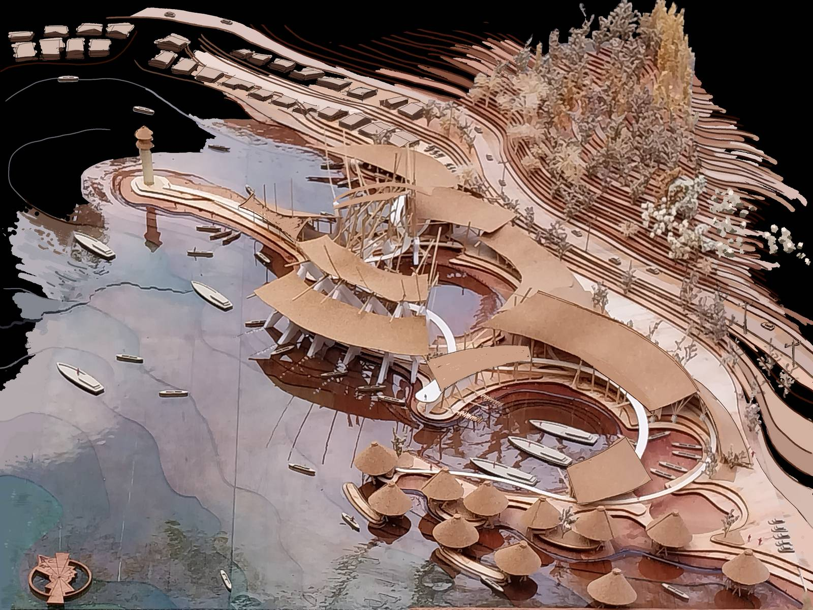

Langgula Village, Gorontalo · B.Arch final project, Universitas Gadjah Mada (2025)
Langgula, known as the "Village of a Million Squids", sits on Tomini Bay. Abrasion has pushed its shoreline back 5 to 30 m in five years and destroyed the existing sea wall and jetty. Steep hills to the east and west leave the sea as the only direction the village can grow. I asked whether coastal protection could stop being a wall and become a building, and designed the breakwater, a reclaimed island and the tourism buildings as one object.

Aerial view of the scheme
5–30 mshoreline retreat in five years, mapped on site
9coastal-defence typologies scored
22.5°radial grid from the squid's eight arms
3 phasestied to ecological recovery
What I did
Mapped the shoreline retreat myself, building on 50 days of KKN-PPM fieldwork in the area in 2023.
Scored nine typologies and chose an offshore breakwater with offshore and shore-attached reclamation. Seawalls and groins were rejected: no ecological benefit, and groins move erosion downdrift.
Placed the breakwater from geomorphology, bathymetry, fishing-boat routes and tides, then tested it with a physical model.
Took the plan from the squid's eight arms and the facade from its chromatophore skin, read together with karawo, Gorontalo's diagonal embroidery.
Program and systems
Fish market beside the boat moorings, plaza, pier, tourism centre, resort, festival court and an artificial tide pool.
Fishing and tourist activity kept apart by zoning.
Rainwater harvesting, distributed solar power, and a dedicated room for processing fish waste.